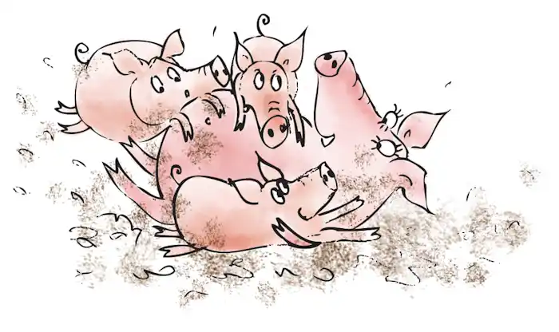
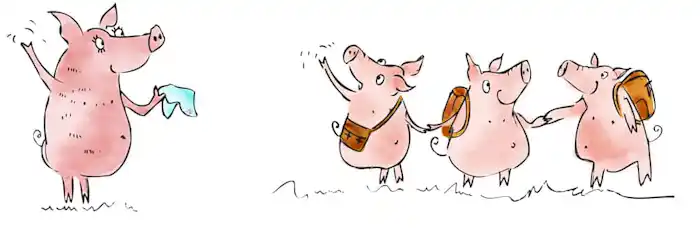
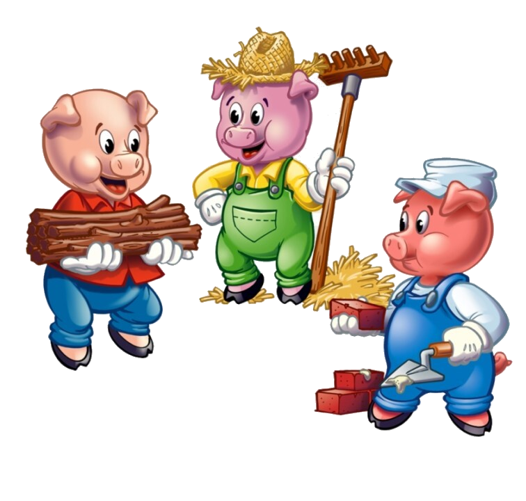
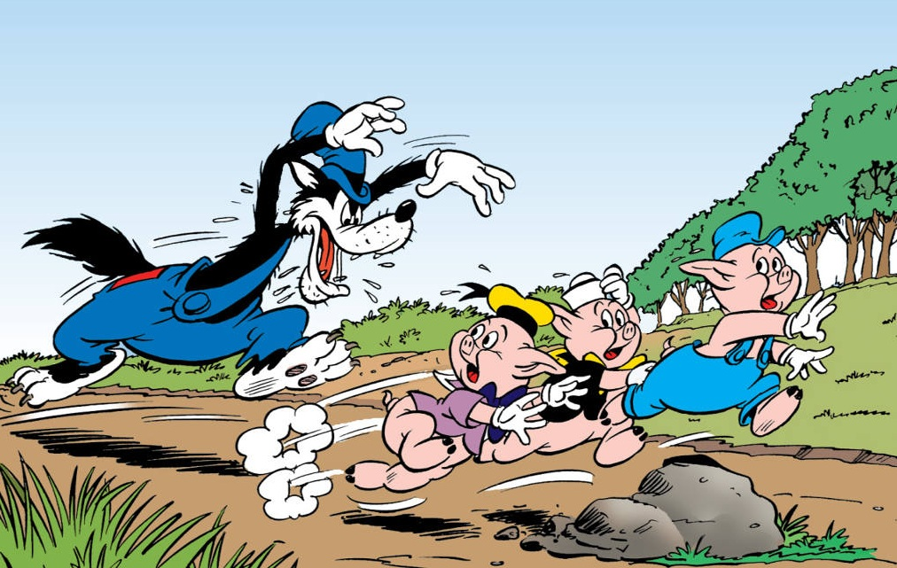

The story of The Three Little Pigs featured here has been adapted from different sources and from childhood memory. The primary sources are English Fairy Tales, retold by Flora Annie Steel (1922). This story is featured in our Fairy Tales and Children's Stories.
Once upon a time, there lived an old mother pig. She had three little pigs.
However, despite their happy lives, food was scarce, making it challenging for them to find enough to eat every day. When the piglets grew old enough, their mother realized she could no longer provide for them as she used to, so she made the difficult decision to let them go and seek their fortunes across the vast world.
Reluctantly, the three little pigs obeyed their mother's wishes and set out on their own paths, each determined to build their own house and make their mark in the world. They were cheerful and talented, but one of them was lazier than the others, preferring to take shortcuts whenever possible.
Unbeknownst to them, something, or someone, lurked in the woods nearby, watching their every move with keen interest.
